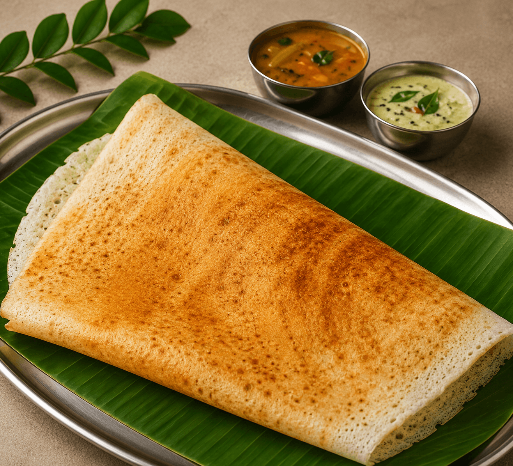

Bestseller
01
Bestseller
01
Bestseller
Podi Ghee Idli Set
Soft idlis tossed in our house podi blend, drizzled generously with pure aged ghee — the perfect Mysore morning.


Naturally fermented cloud-soft idlis served with handcrafted chutneys, rich podi blends, and authentic South Indian flavours — in the heart of Kochi.
Every dish carries the memory of Mysore mornings — recipes refined over generations, now alive in Kochi.
Bestseller
01
Bestseller
Soft idlis tossed in our house podi blend, drizzled generously with pure aged ghee — the perfect Mysore morning.
 Must Try
02
Must Try
02
Indulgence
House podi idlis elevated with a generous smear of fresh white butter that melts on contact.
 Signature
03
Signature
03
Mysore Original
Crispy dosa with Mysore red chutney spread inside, loaded with spiced potato masala and fresh butter.
 Fan Fav
04
Fan Fav
04
Classic
Bite-sized coin idlis soaked in homestyle sambar — pure comfort in a bowl.
 Special
05
Special
05
Bangalore Style
Open-style Bangalore dosa piled high with melted cheese — crispy, indulgent, unforgettable.
 Must Have
06
Must Have
06
The Perfect Close
Rich South Indian decoction brewed to perfection with farm-fresh milk — the ideal end to every breakfast.
12+ hours minimum — no shortcuts, no additives. Natural fermentation produces the lightest, most digestible idlis imaginable.
Passed down through generations from Mysore kitchens — preserved faithfully, never modernised for convenience.
Finest raw rice, freshly split urad dal, farm-fresh ghee, and freshly ground podi spices. Quality you can taste.
Every idli steamed fresh every morning. We don't reheat or refrigerate. If it's not fresh, it doesn't leave our kitchen.
Open, transparent preparation areas so you can see exactly how your food is made — to the highest hygiene standards.
“An idli made with care and patience is more than food — it is a morning ritual, a memory, a homecoming.”
Mysore Raman Idli was born from a simple longing — the kind that hits you on a rainy morning when nothing but a plate of perfectly soft idlis will do. Our founders grew up waking to the aroma of fermenting batter and the sound of steel vessels, in homes where breakfast was never rushed.
We brought that unhurried ritual to Kochi. Every recipe is traced back to the original — the actual homes of Mysore where the art of idli-making is a living tradition. We don't reinvent. We preserve.
The result is something rare in a fast-food world: a breakfast that feels like coming home, every single morning.
True idli is not made — it is cultivated. From the moment rice meets water to the final steam, our process is an act of deep respect for tradition.
6 PM
Carefully selected raw rice and urad dal are washed and soaked separately — the first act of patience.
10 PM
The soaked grains are ground slowly in traditional stone grinders. Gentle friction; silky, aerated result.
Midnight
The mixed batter rests undisturbed for 10–12 hours. Natural wild yeasts begin their slow, magical work.
6 AM
By dawn the batter has risen beautifully. Idlis poured and steamed fresh — soft, airy, alive with flavour.

“Fermentation is the original slow food. It cannot be rushed, only respected.”
12h+
Natural Fermentation


“I moved from Bangalore and was desperately missing authentic South Indian breakfast. Mysore Raman Idli is the closest thing to home. The podi idli is absolutely divine.”
“The benne idli here is exactly like what you'd get in Mysore. Soft, buttery, perfect chutney. I come here three times a week and I'm not ashamed.”
“The filter coffee deserves a separate review. Strong, aromatic, perfectly sweetened — paired with thatte idli it's the best breakfast experience in Kochi.”
“Came on a recommendation and can't stop coming back. Mini sambar idli is comfort food at its finest. Staff is warm, place is clean, food always fresh.”
“Worth the 40-minute drive from Aluva. The ghee podi idli is something else — rich, fragrant, and so satisfying. This is how idli is supposed to taste.”
Authentic Mysore breakfast, always close by in the heart of Kochi's IT hub.
— The Home of Authentic Mysore Idlis
Two locations across Kochi. Open every day from 7 AM. Come for the idli. Stay for the filter coffee. Leave with a memory.
Total: